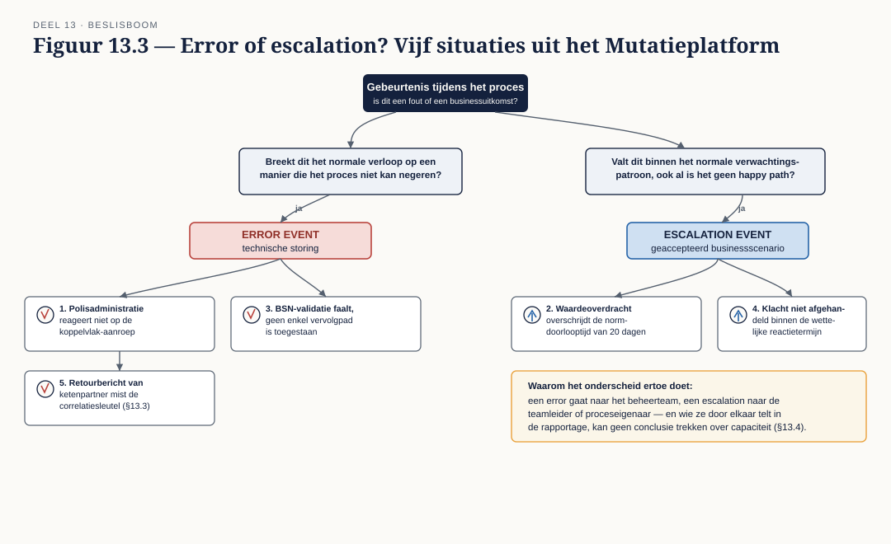
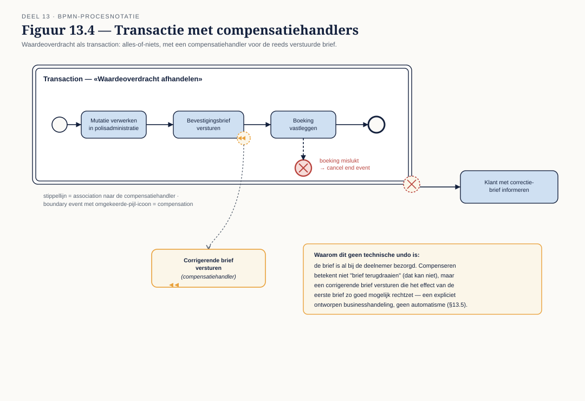
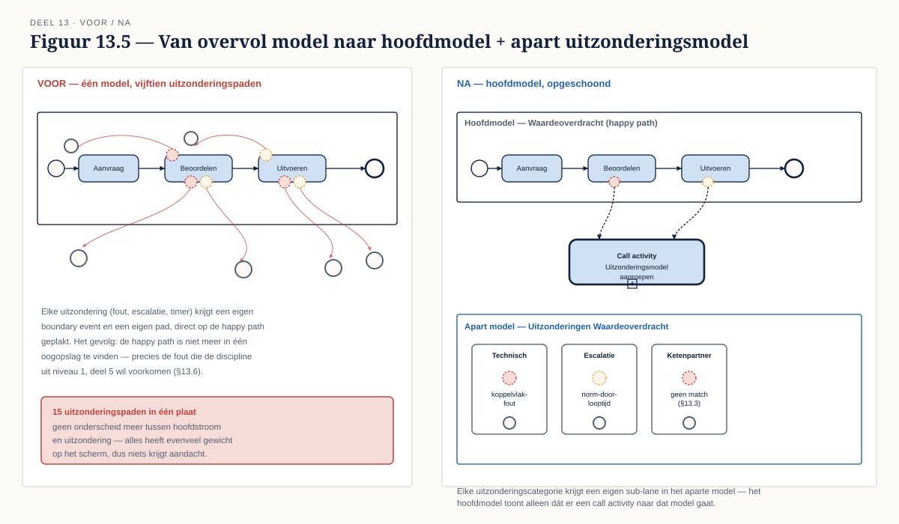

Deel 13 — BPMN gevorderd I: samenwerking en uitzonderingen
Reader · Ductus-cursus BPMN, CMMN & DMN · niveau 2 (praktijk) · deel 13 van 30 · studielast ± 7 uur
Dit materiaal bereidt voor op het examen OCEB 2 Business Intermediate van de Object Management Group en op het BPM+ Certificate van BPMInstitute.org. Het is geen vervanging van het officiële examenmateriaal.
Leerdoelen
Na dit deel kun je:
- Collaboration, choreography en conversation diagrams onderscheiden en toepassen.
- Berichtenuitwisseling tussen organisaties modelleren, inclusief correlatie.
- Foutafhandeling ontwerpen met error, escalation, compensatie en transacties.
- Uitzonderingsscenario's modelleren zonder de leesbaarheid van het hoofdmodel op te offeren.
Terug naar de praktijk
Niveau 1 behandelde de elementen van de analytic subclass (deel 4) als notatie: wat betekent een error event, wat doet een boundary event, hoe werkt een event subprocess. Dit deel behandelt dezelfde elementen als ontwerpvraagstuk: niet "hoe teken ik dit correct" maar "wanneer kies ik hiervoor, en wat betekent die keuze voor de organisatie die het proces straks uitvoert". Het Programma Mutatieplatform, met zijn koppeling naar een ketenpartner bij waardeoverdrachten en zijn eigen foutgevoelige legacy-koppelvlak, levert de situaties waar deze keuzes er echt toe doen.
13.1 Drie diagramtypen
BPMN kent drie manieren om samenwerking tussen partijen te tonen, elk met een ander doel:
- Collaboration diagram — het bekende: meerdere pools, met de interne processen (voor zover getoond) en de message flows ertussen. Dit is wat je in niveau 1 grotendeels hebt gemaakt.
- Choreography diagram — toont uitsluitend de berichtenuitwisseling zelf als het onderwerp, zonder de interne activiteiten van elke partij te tonen. Elke "task" in een choreography is een bericht dat van de ene naar de andere partij gaat.
- Conversation diagram — een nog abstracter overzicht: welke partijen wisselen berichten uit, geclusterd tot "conversaties", zonder de precieze volgorde of inhoud te tonen.
Wanneer welke, en waarom je choreography zelden ziet. Een collaboration diagram is de juiste keuze zodra je ook het interne proces van (minstens) één partij wilt tonen — verreweg de meest voorkomende situatie. Een choreography diagram is zuiver wanneer het onderwerp zelf de berichtuitwisseling is, onafhankelijk van wie wat intern doet — bijvoorbeeld bij het specificeren van een interorganisatorisch protocol tussen twee partijen die elk hun eigen interne proces geheim willen houden. In de praktijk is dit zeldzaam: organisaties willen vrijwel altijd ook tonen wat er intern gebeurt, en een collaboration diagram met een collapsed pool voor de externe partij (deel 3 van niveau 1, §3.2) dekt de meeste behoeften net zo goed met minder notatie om te leren. Een conversation diagram is nuttig als eerste overzicht bij een complex landschap met veel partijen, voordat je in een collaboration diagram induikt.
13.2 Meerdere pools in de praktijk
Publieke versus private processen. Het interne proces van een organisatie (het private proces) toont alle stappen, inclusief interne besluitvorming. Het publieke proces toont alleen wat naar buiten zichtbaar is: de berichten die verstuurd en ontvangen worden. Bij het modelleren van een ketenpartner (bijvoorbeeld de andere pensioenuitvoerder bij een waardeoverdracht) modelleer je bijna nooit hun private proces — je kent het niet, en het is niet jouw zaak.
De black-box pool als bewuste keuze. Een collapsed pool voor de externe partij (niveau 1, deel 3, §3.2) is niet een tekortkoming maar een expliciete grens: het model laat zien "hier eindigt onze verantwoordelijkheid en begint die van de ander". Dit is een architectuurkeuze — het bepaalt bijvoorbeeld ook waar in het koppelvlak (deel 18) je een contract vastlegt versus waar je een interne aanname doet.
13.3 Correlatie
Wanneer een proces met meerdere gelijktijdig lopende instanties berichten van buiten ontvangt, moet elk binnenkomend bericht bij de juiste instantie terechtkomen. Dat mechanisme heet correlatie.
Correlatiesleutels. Een correlatiesleutel is een gegeven (of combinatie van gegevens) dat in zowel het uitgaande als het inkomende bericht voorkomt en uniek genoeg is om de juiste instantie te vinden — bijvoorbeeld een polisnummer plus een aanvraagreferentie.
Wat er misgaat zonder. Zonder correcte correlatie kan een binnenkomend bericht (bijvoorbeeld: de bevestiging van een waardeoverdracht door de andere uitvoerder) bij de verkeerde, of bij geen enkele, procesinstantie terechtkomen. Dit is geen "IT-detail" maar een businessprobleem: een dossier dat nooit de bevestiging ontvangt die feitelijk al binnen is, blijft onterecht openstaan, met alle gevolgen voor doorlooptijdmetingen en klantcommunicatie van dien.
Casusfragment — Programma Mutatieplatform Bij Waardeoverdrachten stuurt Meridiaan een aanvraag naar de andere pensioenuitvoerder en wacht op een bevestiging. Op enig moment lopen er honderden van deze aanvragen tegelijk. De correlatiesleutel — een combinatie van het eigen dossiernummer en het polisnummer van de deelnemer — moet in beide richtingen consequent worden meegestuurd. Ontbreekt de sleutel in de retourboodschap van de ketenpartner (iets waar Meridiaan part noch deel aan heeft maar wel de gevolgen van draagt), dan is een technische workaround nodig — vaak een matching op basis van minder betrouwbare gegevens, met foutrisico.
13.4 Foutafhandeling ontworpen
Niveau 1, deel 4 behandelde error en escalation als notatie. Hier is het een ontwerpkeuze: is dit een businessuitkomst, of een technische storing?
Een error event hoort bij iets dat het normale verloop van het proces breekt op een manier die het proces zelf niet kan negeren — een systeem dat niet reageert, een validatie die faalt op een manier die geen enkel vervolgpad toestaat. Een escalation event hoort bij iets dat wél binnen het normale verwachtingspatroon van de organisatie valt, ook al is het geen happy path — een aanvraag die de norm-doorlooptijd overschrijdt, is geen fout, het is een bekend, geaccepteerd scenario dat om een ander soort aandacht vraagt.
Dit onderscheid is meer dan semantiek: het bepaalt wie er wordt geïnformeerd (een technische fout naar een beheerteam, een escalatie naar een teamleider of proceseigenaar), en het bepaalt hoe je het meet — een organisatie die technische fouten en businessescalaties door elkaar telt in haar rapportages, kan geen zinvolle conclusies trekken over waar de capaciteit tekortschiet.
13.5 Transacties en compensatie
Een transaction (niveau 1, deel 4, §4.5) dwingt alles-of-niets-gedrag af: als een van de stappen binnen de transactie faalt, wordt alles wat al voltooid was, gecompenseerd.
Wat compensatie in de praktijk betekent. In een systeem is compenseren vaak eenvoudig: een database-transactie terugdraaien. In een proces dat mensen en systemen combineert, is dat zelden zo schoon. Een verstuurde brief kun je niet terugdraaien — je kunt hoogstens een nieuwe, corrigerende brief versturen. Een compensatiehandeling in BPMN is dus geen technische undo-knop, maar een businesshandeling die het effect van de eerdere stap zo goed mogelijk ongedaan maakt of rechtzet, en dat moet je expliciet ontwerpen, niet aannemen dat het "vanzelf" gebeurt zoals bij een databasetransactie.
13.6 Leesbaar houden
Met alle elementen uit dit deel beschikbaar — meerdere pools, correlatie, error/escalation, compensatie — is de verleiding groot om alles in één model te tonen. De modelleerdiscipline uit niveau 1, deel 5 geldt hier onverkort, en wint aan gewicht naarmate het model groeit: happy path eerst en prominent, uitzonderingen in de marge, en — nieuw op dit niveau — een expliciete afweging wanneer je een model opsplitst in meerdere gekoppelde diagrammen in plaats van alles in één plaat te proppen. Een model met vijftien uitzonderingspaden is zelden nog één goed model; het is vaak een teken dat een deel van de uitzonderingen een eigen (sub)proces of zelfs een eigen CMMN-model verdient (niveau 1, deel 8).
Kernbegrippen
Collaboration / choreography / conversation diagram — de drie samenwerkingsdiagrammen · Publiek / privaat proces — wat naar buiten zichtbaar is versus het interne verloop · Correlatie / correlatiesleutel — het mechanisme om een bericht bij de juiste instantie te bezorgen · Error versus escalation — technische storing versus geaccepteerd businessscenario · Transaction / compensatie — alles-of-niets-gedrag en het rechtzetten van eerdere stappen
Examenrelevantie — OCEB 2 Business Intermediate en BPM+
Verdieping van de BPMN-modelleervaardigheid uit Fundamental, nu toegepast op interorganisatorische scenario's en foutafhandeling als ontwerpkeuze — een kernonderdeel van beide certificeringen op dit niveau.
Leeswijzer bij de specificatie
- BPMN 2.0.2 — het hoofdstuk over Collaboration, Choreography en Conversation, het hoofdstuk over Message Correlation, en de secties over Transaction en Compensation binnen het hoofdstuk over activiteiten.
Figurenlijst




